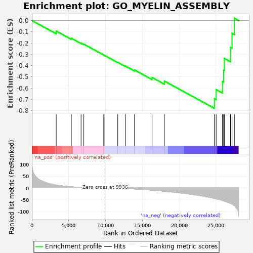

| | | Dataset | PRAD |
| Phenotype | NoPhenotypeAvailable |
| Upregulated in class | na_neg |
| GeneSet | GO_MYELIN_ASSEMBLY |
| Enrichment Score (ES) | -0.7796119 |
| Normalized Enrichment Score (NES) | -1.7401116 |
| Nominal p-value | 0.0 |
| FDR q-value | 0.0015833599 |
| FWER p-Value | 0.133 |
Table: GSEA Results Summary

Fig 1: Enrichment plot: GO_MYELIN_ASSEMBLY
Profile of the Running ES Score & Positions of GeneSet Members on the Rank Ordered List
| PROBE | GENE SYMBOL | GENE_TITLE | RANK IN GENE LIST | RANK METRIC SCORE | RUNNING ES | CORE ENRICHMENT | | 1 | CD9 | | | 3303 | 12.330 | -0.0939 | No |
| 2 | ERCC2 | | | 5355 | 4.951 | -0.1575 | No |
| 3 | MPP5 | | | 6682 | 2.370 | -0.2001 | No |
| 4 | MTMR2 | | | 7051 | 1.910 | -0.2096 | No |
| 5 | GNPAT | | | 9756 | 0.051 | -0.3058 | No |
| 6 | FIG4 | | | 9914 | 0.007 | -0.3114 | No |
| 7 | PIKFYVE | | | 11662 | -1.227 | -0.3713 | No |
| 8 | TENM4 | | | 12710 | -2.507 | -0.4038 | No |
| 9 | UGT8 | | | 13938 | -4.431 | -0.4390 | No |
| 10 | DICER1 | | | 16325 | -9.606 | -0.5055 | No |
| 11 | NCMAP | | | 17992 | -14.221 | -0.5374 | No |
| 12 | ANK2 | | | 24789 | -44.402 | -0.6939 | Yes |
| 13 | EPB41L3 | | | 25025 | -46.131 | -0.6132 | Yes |
| 14 | ILK | | | 25877 | -53.313 | -0.5406 | Yes |
| 15 | TLR2 | | | 26040 | -54.839 | -0.4406 | Yes |
| 16 | GPC1 | | | 26139 | -55.799 | -0.3363 | Yes |
| 17 | PMP22 | | | 26971 | -65.724 | -0.2391 | Yes |
| 18 | CNTNAP1 | | | 27184 | -68.907 | -0.1136 | Yes |
| 19 | NFASC | | | 27499 | -75.312 | 0.0206 | Yes |
Table: GSEA details [plain text format]
Fig 2: GO_MYELIN_ASSEMBLY: Random ES distribution
Gene set null distribution of ES for GO_MYELIN_ASSEMBLY